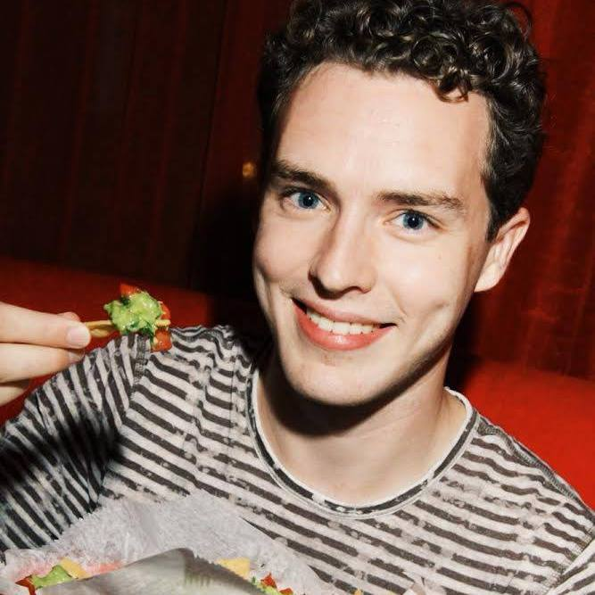

Registration
- "New Adventures in Responsive Web Design" Workshop [22$]: https://goo.gl/1MS0TJ
- All other workshops: https://goo.gl/V4C7ex
- Conference Day: https://goo.gl/4zNePo (Your registration will be confirmed only when you receive Eventbrite ticket from us)
Thursday, 18th February
Venue: IBB Conference Center
Address: Prospekt Gasety Prawda 11, Minsk
18:00 - 22:00 ru
-

Kseniya Koltun
UX workshop "Concept design for a new product" for novice professionals in the UX field
This intense and hands-on workshop focuses on how to design a concept for a new product. During 4 hours, you will practice your skills in basic UX topics:
- Users Interview - popular User Research method
- User Scenarios design
- Sketching
- "Selling" your concept
The workshop sheds light on the UX process as a whole; explains basic UX methods which you can easily use in your job. Requirements: pen or pencil, sticky notes
Friday, 19th February
Venue: Imaguru Startup Hub(2nd floor)
Address: ulitsa Fabritsiusa 4, Minsk
17:00 - 22:00 ru
-

Vitaly Friedman
New Adventures in Responsive Web Design
With HTTP/2, Service Workers, Responsive Images, Flexbox, SVG, WAI-ARIA roles and Font Loading API now available in browsers, we all are still trying to figure out just the right strategy for designing and buildings responsive websites efficiently. We want to use all of these technologies and smart processes like atomic design, but how can we use them efficiently, and how do we achieve it within a reasonable amount of time?
In this workshop, Vitaly Friedman, editor-in-chief of Smashing Magazine, will be looking into a strategy for crafting fast, resilient and flexible responsive design systems by utilizing all of those wonderful shiny web technologies we have available today. We'll also talk about dealing with legacy browsers and will cover a few dirty little techniques that might ensure that your responsive websites will stay relevant, flexible and accessible in the years to come.
Saturday, 20th February
Venue: Belarus Hi-Tech Park, Business Incubator
Address: vulісa Akadеmіka Kuprеvіča 1, Building 5, Minsk
How to get there:
Using public transport: take minibus taxi 1280 Малиновка-8"- ДС Уручье-4, (Malinovka-8- DS Uruchye-4) starting from the Independence Avenue or from the Московская (Moskovskaya) metro station in the direction of Уручье (Uruchye) by buses 25, 64 and 145 to the ул. ак. Купревича (Kuprevicha) stop.

9:00
-
Registration, morning coffee
9:45
-

RS Crew
RU
Welcome!
10:00
-
Stream A

Ingvar Stepanyan @rreverser
en
JavaScript parsing, transformations, transpilation.
Talk will cover complete stack, starting from what are lexers and parsers in general and how they work, and ending with how well-known JS transpilers and parsers work and how you can write custom transformers for easing everyday development on own projects.
Stream B
Всеволод Шмыров @v_shmyrov
ru
Использование File API в Конструкторе Яндекс.Карт.
Совсем недавно в Конструкторе Яндекс.Карт произошло большое обновление. Была добавлена возможность получать изображение карты в высоком качестве для полиграфической печати. Интересно это обновление тем, что это все происходит в прямо в браузере при помощи web спецификации File API. В докладе пойдет речь про практическое использование File API в конструкторе и про другие полезные кейсы использования спецификаций.
10:45
-
Short break (5min)
10:50
-
Stream A

Gabriel Mičko @gabriel_micko
en
WebRTC from Zero to Hero
Technology and the way people communicate have been evolving. With this in mind, WebRTC opens a whole new spectrum of communication platforms. It runs on the Web. The same platform I truly believe in.
Stream B
Vladimir Petriko
ru
TauCharts and data visualization
Визуализация стала горячей темой, как только мир вошёл в эру больших данных. Однако тихая революция случилась 19 августа 1999 года с выходом книги Леланда Вилкинсона “Grammar of graphics” (GoG), в которой автор представил универсальную концепцию визуализации данных. “Taucharts” - графическая open source библиотека, основанная на принципах GoG и разработанная компанией Taucraft.
11:40
-
Coffee break
12:00
-
Stream A
Nastassia Kiseleva & Konstantin Leyer
en
WebRTC in Action!
Stream B
Michael Bodnarchuk@davert
ru
Modern Acceptance Testing with CodeceptJS
What would you choose for acceptance testing? Selenium-webdriver, Protractor, WebDriverIO, Nightmare, Intern, or... Do you really know the difference? But now we have a framework to rule them! Meet CodeceptJS, which allows you to write tests in scenario-driven BDD manner, and execute by using a driver of your choice!
12:18
-
Short break (2min)
12:20
-
Stream A
Seth Thompson @s3ththompson
en
ES2015 in the browser: beyond the polyfillable
Some of the new, ES2015 features of the JavaScript language (including Proxies) can't be transpiled, polyfilled, or rewritten in ES5. Now that V8 and other JavaScript engines are nearing complete native ES2015 support, it's time to explore how to develop and ship applications that take full advantage of these features. We'll talk about the cost of transpiling code to ES5, the use cases of ES2015 features that can't be polyfilled, and how to ship code that takes advantage of the state-of-the-art, but still runs in older browsers.
Stream B
Roman Prudnikov @RayProud
ru
Typography: from metal to pixels
Todays frontend-developers spend many hours learning about a wide range of JavaScript frameworks. This is why they almost always forget about the most important part— typography. The history and basics of typography may be helpful for frontend-developers who want to be able to make texts work. There are several interesting points in typography's history and laws that must be known, along with some specific CSS rules in real projects — that's about this speech.
13:20
-
Coffee break (70 min)
During Lunch break we’ll offer tea, coffee and snacks. You can order hot meals when you register (https://goo.gl/T675fS) and then pay for it and get it at the "Умные люди" café (vulісa Akadеmіka Kuprеvіča 1, Building 4). Alternatively you can use food delivery services: eda.by, sushivesla.by.
14:30
-
Martin Naumann @g33konaut
en
Life of a pixel: Computer Graphics for JavaScript Developers
All we do in frontend development ends up as pixels on screen yet many people don't really know how a pixel goes from zeroes and ones in memory to bright colours on screen. This talk explains how that works and gives an introduction into the basic principles of 2D and 3D computer graphics, filtering and different techniques to make things look better. This can help you improve your rendering performance not only for games, but regular websites, too.
15:20
-
Kseniya Koltun
ru
Forms are boring
Form design is a difficult UX task. Users walk through the fields, enter data in various formats using different controls. UX/UI designers invent plenty of new custom controls which our poor users have to puzzle out so that they can order pizza or pay for mobile phone. Life is not becoming easier. In addition, we do not take into account that most people still think a field is a place where a cow lives. In my speech I will tell about usability testing findings and real case studies in form design. No sh**t about labels placing and users interaction axis this time :)
15:50
-
Coffee break
16:10
-

Andrey Listochkin @listochkin
ru
Качество. Как делать свою работу хорошо.
От качества кода до процессов и общения в команде.
17:10
-
Coffee break
17:30
-
Vitaly Friedman
ru
Dirty Little Tricks From The Dark Corners of eCommerce
In this talk, Vitaly will be covering a few design patterns to increase conversion by improving clarity and consistency of the eCommerce experience and sparkling a little bit of delight here and there. You’ll walk away with hands-on tips and techniques for crafting better eCommerce experience right away.
18:30
-
Alexander Gerasimov
ru
CSS QuickDraw!
Your CSS is fast, but are you?
19:15
-
Closing Ceremony
20:00
-
Afterparty at Gaststätte (Гаштет) beer restaurant
Address: Vulitsa Zakharava 31, Minsk
Sunday, 21th February
Venue: IBB Conference Center
Address: Prospekt Gasety Prawda 11, Minsk
-

11:00 - 13:00 ru
Ilja Satchok
Music of React Native
Leverage your existing skill to build native mobile apps for iOS using React Native. Create a complex app with Deezer iOS SDK to demonstrate some features and workflow: set up an environment, debug, write native modules, communicate with obj-c.
Requirements: os x, nodejs 4+, xcode 6+; -
14:00 - 16:00 en
Martin Naumann
Shaders - unlocking the GPU with JavaScript
You may have heard of shaders as a part of the WebGL pipeline for 3D graphics, but they can be used for much more!
-
16:30 - 18:30 ru
Andrey Listochkin
Проектирование в тестировании
Как часто вам встречаются проекты без тестов? Как часто на собеседовании на ваш вопрос "а есть ли у вас тесты" вы слышите "да, у нас слой API покрыт тестами"? В то же время вам постоянно встречается слово TDD и вы много раз слышали, что так "надо" писать.
Для многих из нас начать писать код с тестами кажется сложным. Особенно, когда дело касается UI, браузеров, внешних сервисов. Часто не понятно, с чего же начать, что именно проверять, как поддерживать тесты, как успевать выпускать продукт, когда какие-то изменения влекут за собой ворох поломанных тестов и часы работы по их исправлению. Или наоборот: тесты прошли, а баги все равно проскакивают.
Мы поговорим не о TDD, а о проектировании самих тестов. Как их писать, на что обращать внимание, как организовать взаимодействие тестов между собой и с вашим кодом, чтобы на всем протяжении проекта они оставались полезными для вас, не задерживали разработку, приносили удовольствие и радость.
Do you have any questions?
Join our Slack channel: #rsconf
If you don't have access to frontendbelarus.slack.com, please, register here: http://frontendbelarus.herokuapp.com/